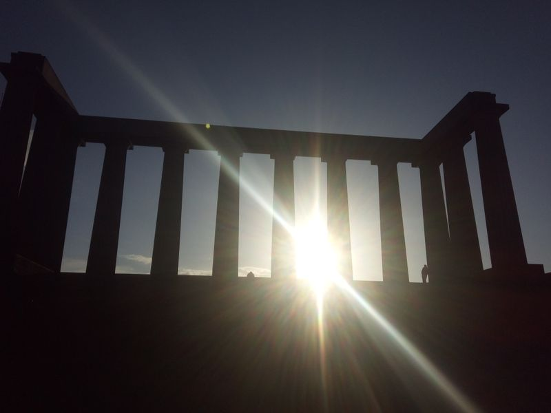

By Cassie
A pub sells a room, and the room has to give people a reason to stay for one more round. Screens do that job in a way that is easy to measure: a venue showing live sport fills on match nights, a venue with a clear digital menu turns over its food service faster, and a venue with a strong visual atmosphere holds a younger crowd past the point where they would otherwise have moved on. That is why nearly every refurbishment in the sector now includes some form of display.
Nightlife venues are also difficult environments. Light levels swing from a bright lunchtime service to a near-dark late bar, sound pressure is high, drinks get spilled, and the space has to be reconfigured from dining to standing within a single trading day. This guide covers what drives demand for LED in bars and pubs, how to specify screens that survive a hospitality environment, and the questions publicans and operators ask before investing.
Live sport is the single largest commercial driver. Match fixtures concentrate demand into a few hours of the week, and the venues that can show the game properly capture a spending pattern that is far above a normal evening. A large, bright, high-refresh screen makes a pub the obvious choice on a Saturday afternoon, and the same screen then earns its place on a quiet Tuesday because it can run menus, promotions and atmosphere content instead of sitting idle.
The second driver is the cost of print. Menus change with seasons, suppliers and specials, and every change in a food-led pub means reprinting boards, laminates or table cards. A digital menu board removes that recurring cost and allows the kitchen to push a special the same day it is conceived. It also lets a venue run different pricing across different dayparts without printing a second set of boards, which is something a paper menu cannot do at all.
Atmosphere is the third driver and the hardest to quantify, but operators see it in dwell time. A screen can turn an underused back room into a function space with a defined visual identity, or give a sports bar a house style that carries through every surface. Venues that add a video wall often find that the screen itself becomes part of the marketing, because customers photograph it and post it, which is free reach of a kind that a repaint never produces.
Finally, the hardware has become practical for venues that are not technical. Panels are thin enough to mount on an existing wall without structural work, quiet enough not to intrude on conversation, and controllable from a tablet, which means a venue manager can change content between shifts without calling an integrator. That ease of operation is what turns a one-off installation into something the venue actually uses every week.
Brightness is the specification most often got wrong in bars, because the room changes through the day. A deep, dark late-night venue needs only a modest output, while a pub with large windows doing lunchtime food trade needs considerably more to stay legible against daylight. The practical answer is a panel with a wide dimming range rather than a single high-brightness compromise, so the screen can be tuned to the room at each hour.
Size and pitch follow from seating layout. A main sports screen is watched from both close seats and the far end of a bar, so it is sized for the furthest sightline rather than the closest. Menu boards are read at a metre or two and want a fine pitch in a small format. Cabinets should be slim, quiet and able to take a knock, and any position near a patio or a smoking area should be specified for the outdoors even though it is attached to the building.
| Application | Series | Cabinet Size | Key Specs | Best Use |
|---|---|---|---|---|
| Sports Bar Main Screen | CV-PRO P1.9 | 600 x 337.5 mm | High refresh, wide viewing angle | Live sport, pay-per-view, events |
| Digital Menu Board | I-BOARD P1.95 | 750 x 250 / 500 mm | 34.5 mm thin, magnetic front service | Food menus, specials, pricing |
| Atmosphere Video Wall | M-PRO P1.5 | 600 x 337.5 mm | Native 16:9, quiet operation | Bar backdrop, music visuals |
| Beer Garden / Patio | D-PRO P5 | 960 x 960 mm | IP65, 8000+ nits, weather rated | Outdoor terraces and courtyards |
| Function Room Screen | X Series P2.6 | 500 x 500 mm | Rental-grade cabinet, fast setup | Functions, private events, karaoke |
The CV-PRO COB range at P1.5 or P1.9 is the workhorse for a main bar screen. COB construction seals the emitter array behind a continuous surface, which is exactly what a venue with drinks, cleaning staff and a busy floor needs, and the very high contrast means a dark broadcast or a dimly lit film still reads properly in a low-light room. The wide viewing angle keeps the picture consistent for a customer sitting along the side of the bar rather than directly in front of it, which is the seating position most screens get wrong.
For menus, the I-BOARD format gives a slim panel that mounts where a printed board used to hang and can be updated from a tablet at the start of each shift. Where the venue has a terrace or a courtyard, the D-PRO outdoor range is the correct specification at IP65 and 8000 nits or more, and the X Series provides a rental-grade cabinet for function rooms that need to be reconfigured between a private dinner and a match night.
| Product | Key Features |
|---|---|
| Asia Vision CV-PRO COB P1.5 / P1.9 | Indoor COB panel at 600 x 337.5 mm with 10000:1 contrast and a wide viewing angle. The standard main screen for sports bars and late venues. |
| Asia Vision I-BOARD P1.95 | Ultra-thin indoor panel, 750 x 250 mm and 750 x 500 mm, 34.5 mm profile with magnetic front service, used for digital menu boards and promotions. |
| Asia Vision M-PRO P1.5 | Native 16:9 indoor panel, 600 x 337.5 mm, with quiet operation and front service access, suited to atmosphere walls and music visuals. |
| Asia Vision D-PRO P5 | Outdoor cabinet at 960 x 960 mm, IP65 rated with 8000+ nits, for beer gardens, terraces and courtyards. |
A bar is an environment that destroys equipment quietly. Spills, heat from a busy kitchen, vibration from a sound system and the general traffic of a hospitality floor all shorten the life of a panel that was not built for it. Asia Vision Technology uses sealed COB faces and industrial power supplies across the indoor range so a wall still looks right after several years of trading, rather than developing dead pixels directly above the bar where every customer can see them.
The range is wide enough for a single venue to be supplied from one source. Pixel pitch spans P0.9 to P20 so a fine menu board and a large atmospheric wall can be bought together, indoor brightness is selectable from 800 to 2500 nits with the dimming range a venue needs across a trading day, and outdoor positions use the IP65 D-PRO range with 8000+ nits. Refresh runs at 3840 Hz or above indoors, which keeps a screen clean when a customer films a try or a goal on a phone and posts it.
Certification covers CE, FCC and RoHS, with UL and ETL available for North American venues and UKCA for the UK, which matters for a pub group operating across regions. Emitter life is rated at 100,000 hours, far beyond the working life of most fit-outs, and the standard warranty is three years. Delivery is quoted at 15 to 20 working days, and factory-direct supply removes the distributor margin that otherwise sits between a venue and its hardware.
For this requirement our range covers it directly: the COB Z rental series (7680Hz flip-chip) and the COB ZH touring series (sealed, wind-rated).
For this requirement our range covers it directly: the S Series (universal rental cabinets for indoor and outdoor use).
Ready to upgrade your venue with LED displays?
Contact Asia Vision Technology for specifications, pricing, and free consultation.
📩 Get a Quote WhatsApp